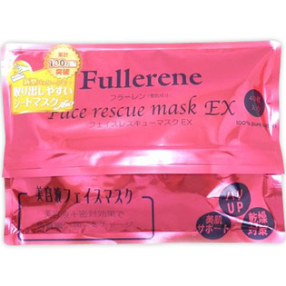

返回列表
产品名称：フラーレンフェイスレスキューマスクEX

カタセ フラーレンフェイスレスキューマスクEX ４０枚
メーカー カタセ
JANコード 4571241290919
商品の特徴
美容液フェイスマスクです。
- 成分・分量
- 水、グリセリン、DPG、エタノール、BG、フラーレン、ヒアルロン酸Na、水溶性、コラーゲン、白金、オクチルドデセス-20、スクワラン、PVP、キサンタンガム、ポリソルベート80、クエン酸、クエン酸Na、フェノキシエタノール、メチルパラベン
- 用法及び用量
- 袋を開けてマスクシートを上から一枚ずつ取り出してお顔にのせます。